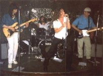

10-09-00 Amsterdam Roothaanhuis
22-09-00 Harlingen Trebol
25-09-00 Den Haag Radio West (Live on radio)
03-10-00 Den Haag De Paap
08-10-00 Alkmaar Atlantis
12-10-00 Zoetermeer Boerderij
04-11-00 Leeuwarden Gloppe (with Doede Bleeker)
11-11-00 Hellendoorn Lantaarn
16-11-00 Nijmegen Doornroosje
18-11-00 Helmond Plato
30-11-00 Tilburg Avenue
06-12-00 Essen (B) Rex (with Cuby & the Blizzards + Monk: Bob
Dylan’s band)
16-12-00 Helmond 60’s festival
10-02-01 Slagharen Proatkoele
??-02-01 Haarlem Patronaat
17-02-01 Heerenveen Sfinx
24-02-01 Amsterdam Paradiso
12 August 2000
New mini LP by Ron And The Splinters, featuring Ron Splinter with members
of the Otherside, the Kliek, the Treble Spankers and the Jack Of Hearts.
More info on Inbetween
Records website.
22 November 1998
In january 1999 dutch label Inbetweens Records will release the double
CD 'This Note's For You Too! (A Tribute To Neil Young)'. All profits
of this project will be forwarded to the Bridge School. One of the contributing
acts will be Ron & the Splinters, a side-project of Outsiders
guitarist Ron Splinter. They do a version of the Buffalo Springfield song
'Burned'. Other contributors are the Fuzztones, the Treble Spankers, the
Continental Drifters, Tom Rapp, Steve Wynn, Richard Lloyd, Chris Cacavas,
Rich Hopkins & Luminarios, Steven Roback, Lee Ranaldo, Sonya Hunter,
Matt Piucci, the Coal Porters, Snares & Kites and many more. For more
info contact starman1@hvision.nl
4 September 1998
The Outsiders are back on the road again! They have changed their name to
Outsider due to legal reasons (Wally has left the band). The new line up
is:

- Appie Rammers - Bass
10 December 1997
Outsiders gig in Belgium!: 20 december 1997 - "Rex" (Essen)
For further info call: (00323)/667.21.45 or visit
the REX
Homepage
09 November 1997
Outsiders' Biography
"OUTSIDERS
door INSIDERS" out now!
10 October 1997
Amsterdam gig report!
30 September 1997
DUTCH TOUR UPDATE:
| 10 Oct | Paradiso | Amsterdam |
| 11 Oct | De Effenaar | Eindhoven |
| 18 Oct | De Bierton | Ittersum (Zwolle) |
| 1 Nov | De Lantaarn | Hellendoorn |
| 7 Nov | Atlantis | Alkmaar |
| 8 Nov | Noorderligt | Tilburg |
| 14 Nov | De Boerderij | Zoetermeer |
| 15 Nov | Stadsschouwburg | Sittard |
| 21 Nov | Patronaat | Haarlem |
| 22 Nov | Stegeman | Laren |
| 28 Nov | Troll | Hoorn |
| 29 Nov | De Oosterpoort | Groningen |
No word yet on any dates abroad.
24 September 1997
DUTCH TOUR DATES KNOWN SO FAR:
| 10 Oct | Paradiso | Amsterdam |
| 11 Oct | De Effenaar | Eindhoven |
| 18 Oct | De Bierton | Zwolle |
| 8 Nov | Gommert | Vlissingen (TBC) |
| 15 Nov | Toonzaa | Oosterhout (TBC) |
No word yet on any dates abroad.
10 September 1997
There's an interview with Wally Tax in next week's [dutch] TV guide because
of a TV programme about them next week. That gig in May in Het Paard was
done for that programme, the real tour will start in October in Paradiso
in Amsterdam. I'll let you know when I find out the actual dates. The tour
will possibly go abroad as well. Belgium and Germany, but also Paris and
Rome belong to the possibilities.
Tax: "We still have a lot of fans in those cities. Not in France or Italy
that is, but only in those cities."
(Thanks to Sander for the info!)
27 July 1997
Friends from Holland reported me about an Outsiders reunion. Sunday 11 May
1997 they played the first official concert of their new tour in 'Het Paard'
in Den Haag (The Hague). Should anybody have further information please let
me know!